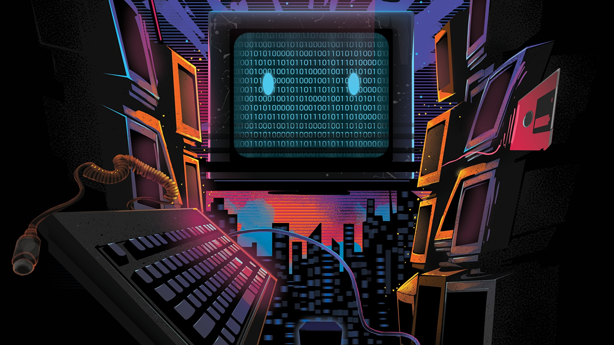

Biografía
Mi nombre es Willi Enrique Orellana Higueros tengo 17 años y soy guatemalteco de corazón. Desde que tengo memoria me ha llamado mucho la atención la informática, de pequeño tenia una computadora donde pude aprender a cómo usarla teniendo una edad tan básica y metiéndome en el mundo de la tecnología, hasta el día de hoy llevando mi adolescencia al limite y aprendiendo lo necesario he podido darme cuenta que las computadoras de ahora son totalmente diferentes a las de antes, todo cambia con forme al rendimiento de los equipos porque ahora tienen programas más pesados y exigentes para un mejor resultado en los trabajos que uno quiera realizar.
Por ende me integre a la carrera de informática para poder seguir aprendiendo sobre como avanza la tecnología y manejar de una mejor manera los aparatos para ir mejorando mis habilidades como informático y así aprovechar al máximo mi conocimiento en las áreas laborales donde pueda aplicar en un futuro donde pueda seguir aprendiendo cosas nuevas, al momento de ser graduado poder no dejare de estudiar ni de aprender quisiera seguir explorando el mundo de la tecnología pero en diferentes partes del mundo para ver cómo se realizan los procesos en otro países así poder traer esos conocimientos a Guatemala y poder aplicarlos para ayudar a mis hermanos Guatemaltecos.
-

- 